| Imagen |
Descripcion |
Precio |
 |
Los huevos estrellados con chilaquiles son un plato típico de México.
Son huevos fritos que se sirven encima de tortillas fritas,
picadas en trozos y rehogadas en salsa de tomate,
ajo, cebolla y chile. Es un plato energético y muy sabroso,
ideal para un desayuno fuerte. |
$90 |
| 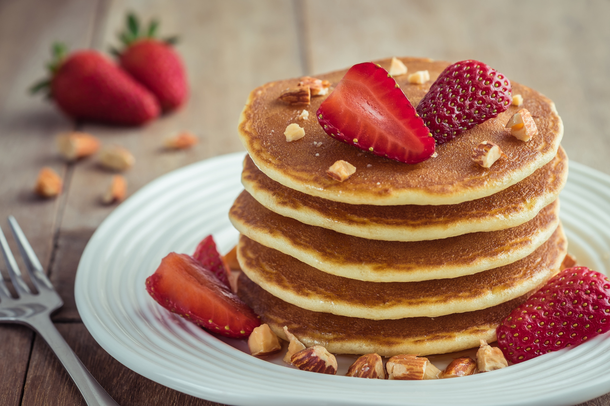 |
Los hot cakes, o panqueques, se sirven calientes con una variedad de aderezos,
como mermelada, dulce de leche, miel, crema, mantequilla,
o incluso queso rallado o frutas frescas. |
$50 |
| 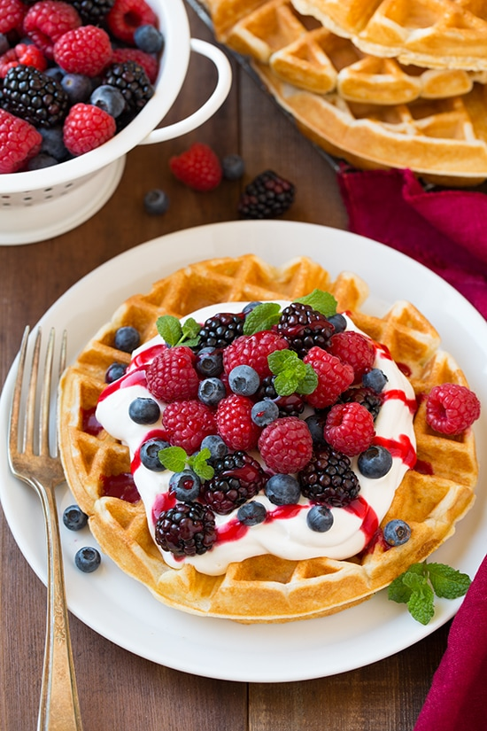 |
Los waffles son un postre delicioso y popular, de origen belga
Son delicados, dulces y de textura esponjosa. Se pueden servir calientes o fríos y acompañados de una variedad de ingredientes,
como nueces, fresas, arándanos, canela o chocolate. |
$50 |
|
Los cuernitos son un pan dulce cóncavo y redondo, de origen español,
popular en la mayor parte de América Latina.
Su textura suave y su relleno de azúcar y canela hacen de estos panecillos un deleite para los paladares más exigentes.
Acompáñalos de chocolate caliente o café y disfrutarás de un momento de relajación y deleite. |
$60 |
| 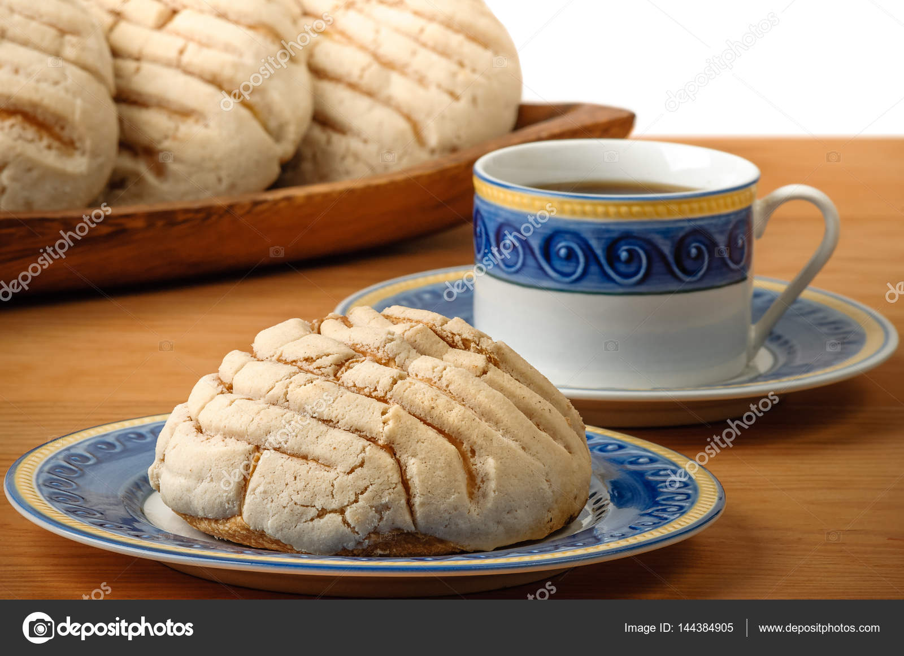 |
Una deliciosa concha española con un acompañamiento de café,
¡un momento de pureza, delicadeza y buen sabor! El aroma y el sabor del café con un delicado sabor a vainilla y azúcar,
combinado con una sabrosa y tierna concha es una delicia sin igual. |
$40 |
| 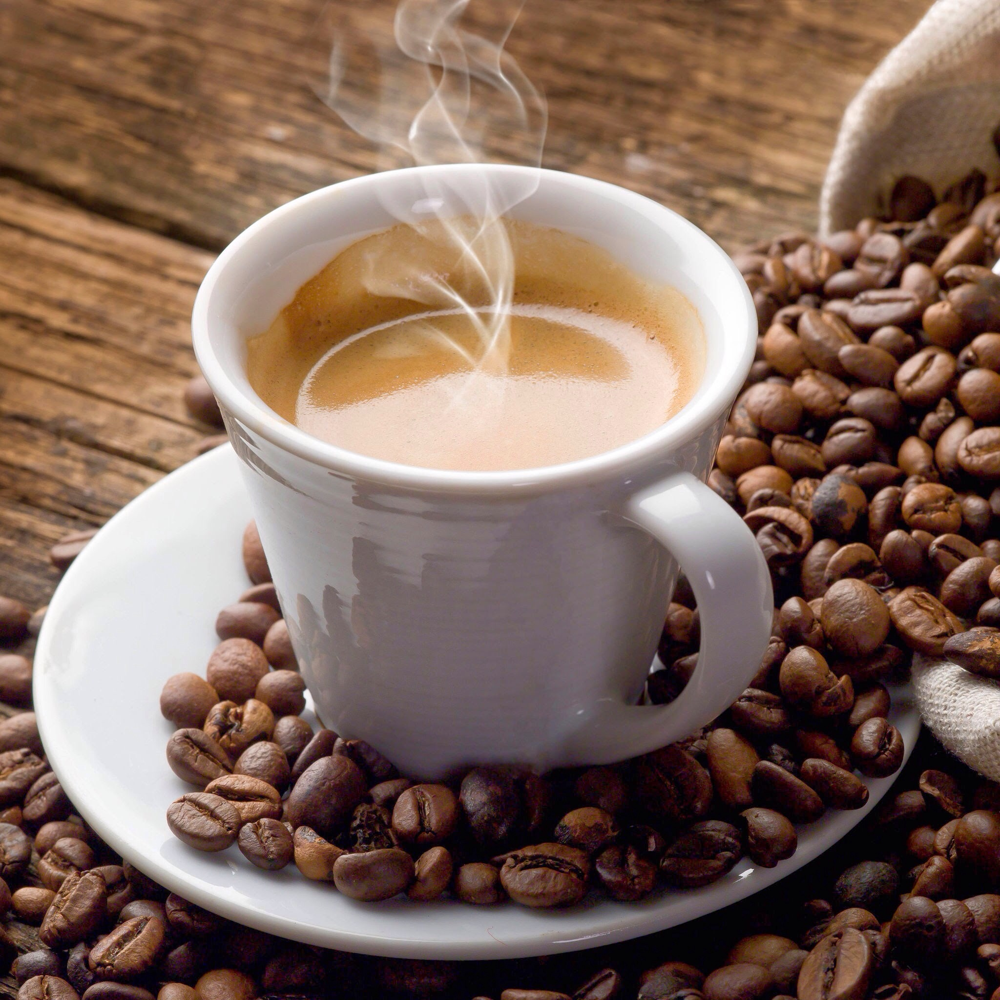 |
Un delicioso cafe calientito recien preparado al gusto. |
$20 |
| Imagen |
Descripcion |
Precio |
| 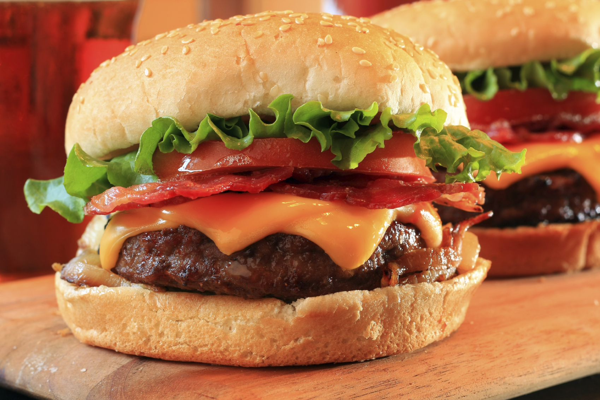 |
emparedado que contiene carne picada o de origen vegetal,
aglutinada en forma de filete cocinado a la parrilla o a la plancha,
aunque también puede freírse u hornearse. |
$110 |
 |
La pizza es un plato hecho con una masa plana, habitualmente circular,
elaborada con harina de trigo, levadura, agua y sal (a veces aceite de oliva)
que tradicionalmente se cubre con salsa de tomate y mozzarella y
se hornea a temperatura alta en un horno de leña.. |
$120 |
 |
tortilla,seguido de un guiso,
acompañado con cebolla, cilantro picado y limón, así como alguna salsa,
la cual varía en su picor al gusto del comensal.. |
$100 |
| 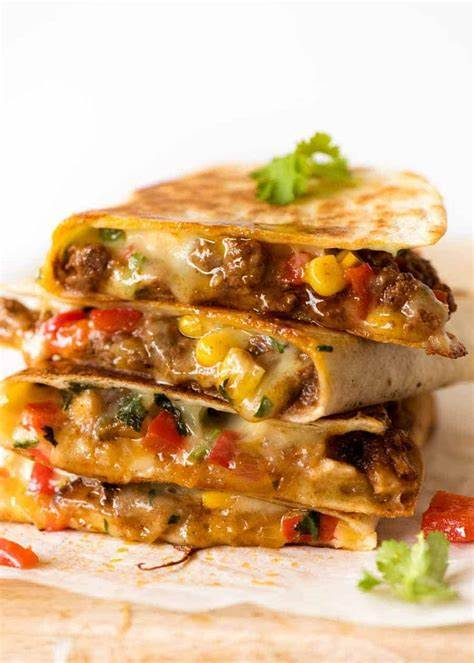 |
platillo típico mexicano elaborado a base de tortilla doblada a la mitad,
esta puede ser de maíz o harina de trigo, la cual va rellena de queso. |
$85 |
| 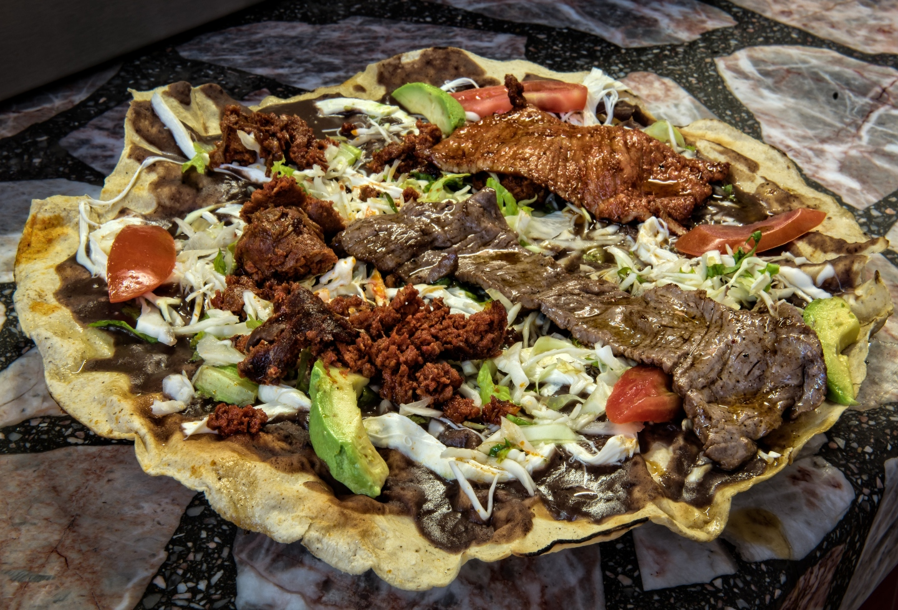 |
Son un antojito clásico de la comida mexicana,
el maíz y el frijol son sus ingredientes principales.
Destacan por su gran contenido de proteínas, calcio, potasio y fibra soluble. |
$80 |
| 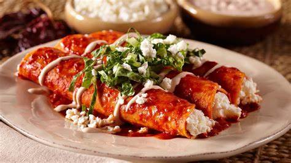 |
típico plato mexicano que se elabora con tortilla de maíz,
bañada en una salsa, picante o no, utilizando un chile en su preparación. . |
$90 |
| Imagen |
Descripcion |
Precio |
| 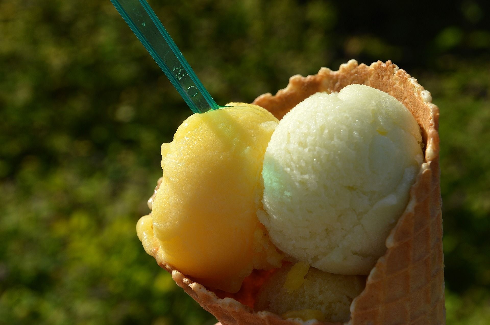 |
Postre congelado hecho de agua, leche, nata, o natillas combinadas con saborizantes
endulzantes, y azúcar. |
$18 |
 |
Exquisito postre compuesto por dos capas
.Una de flan y otra de bizcocho de chocolate.. |
$50 |
| 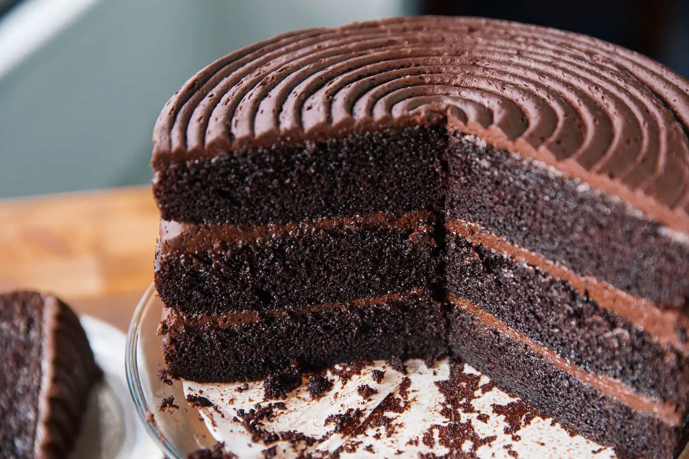 |
Delicioso y exquisito pastel de chocolate
grande para toda la familia. |
$100 |
| 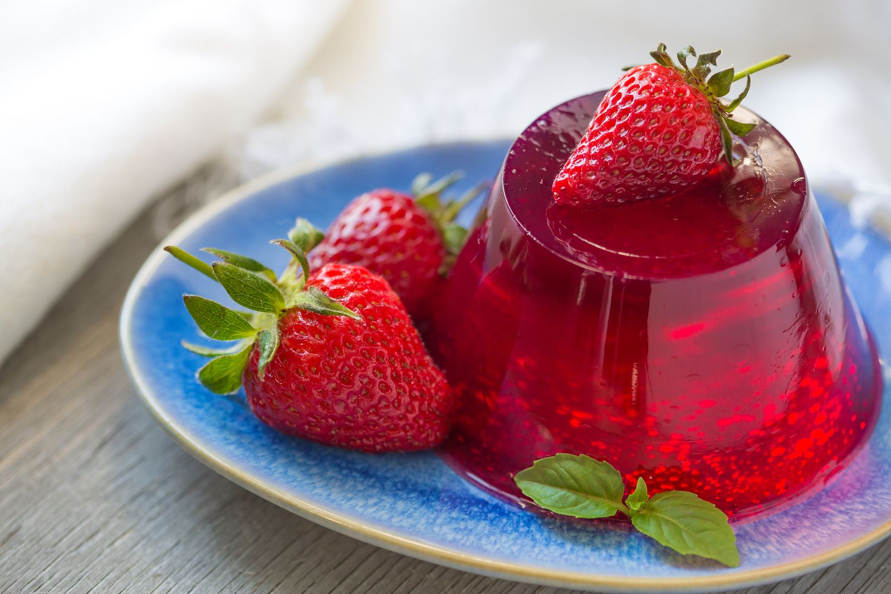 |
Deliciosa gelatina de muchos sabores y colores. |
$30 |
| 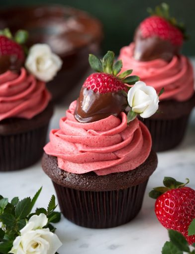 |
los cupcakes son una deliciosa y versátil opción para satisfacer el antojo de algo dulce. |
$30 |
 |
Delicioso pay de varios sabores. |
$60 |
| Imagen |
Descripcion |
Precio |
| 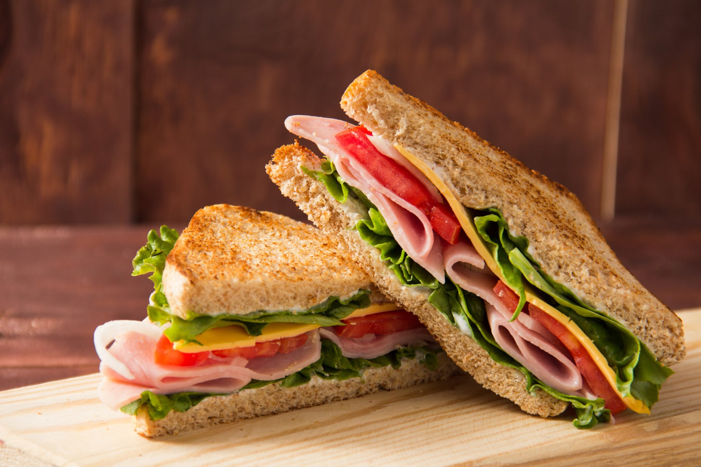 |
emparedado hecho con dos rebanadas de pan de molde entre las que se coloca
jamón, queso, embutido, vegetales u otros alimentos. |
$20 |
| 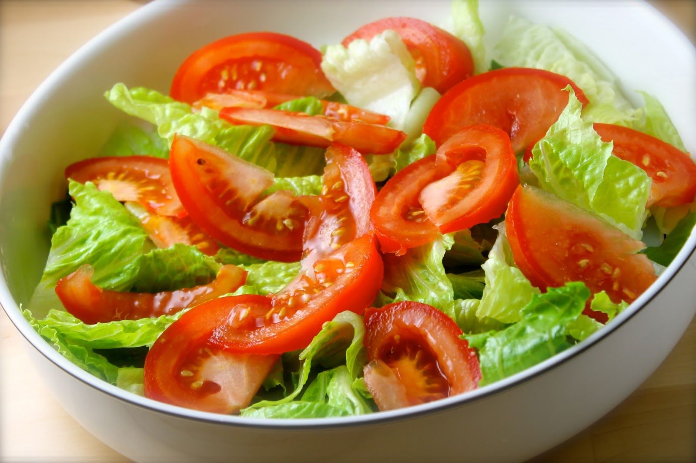 |
Hortaliza o conjunto de hortalizas mezcladas, cortadas en trozos y aderezadas con
sal, aceite, vinagre y otros ingredientes |
$50 |
| 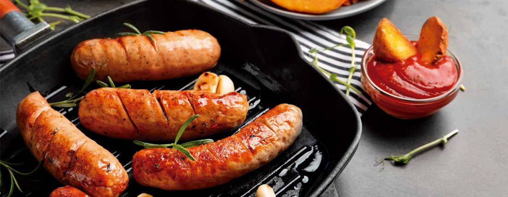 |
embutido pre cocido de pasta fina, elaborado a base de una masa emulsificada,
preparada con carne de res, carne de cerdo, grasa,
ingredientes y aditivos alimentarios permitidos. |
$80 |
 |
carne asada, frecuentemente de cordero, pero que podemos encontrar también con ternera,
pollo o incluso pescado |
$50 |
 |
El espagueti a la boloñesa es un clásico de la cocina italiana que puedes disfrutar directamente en tu mesa. |
$40 |
 |
Los nachos son un platillo de origen mexicano,
que consiste en freír trozos de tortilla de maíz cubiertos
con un queso especial llamado «queso para nachos». |
$50 |